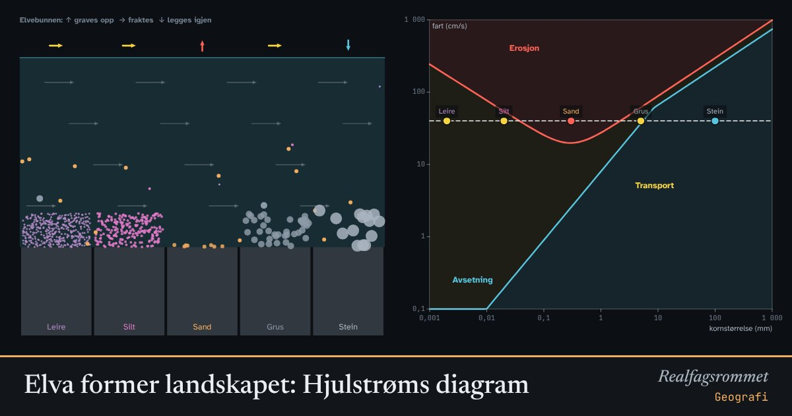

Elva former landskapet: Hjulstrøms diagram
Hvor fort vannet renner, avgjør hva elva graver løs, hva den frakter med seg og hva den legger igjen. Leire er overraskende vanskelig å rive løs, men når den først er i vannet, synker den nesten ikke.
Start animasjonen
Formler
Om animasjonen
Diagrammet til høyre er Hjulstrøms diagram, laget av den svenske geografen Filip Hjulström i 1935. Begge aksene er logaritmiske, og kurvene her er forenklede.
Over den øvre kurven river vannet løs korn av den størrelsen: erosjon. Under den nedre kurven synker kornene til bunns: avsetning (sedimentasjon). Mellom kurvene blir korn som allerede er i vannet, fraktet videre.
Sand er lettest å erodere. Leire og silt er små, men kornene klistrer seg sammen, så det trengs høy fart. Når de først er i vannet, synker de svært sakte. Derfor blir elvevann grumsete lenge etter en flom.
Der elva bremser opp, for eksempel i en innsjø eller i havet, legges materialet igjen i rekkefølge etter størrelse. Slik dannes deltaer.
Prøv dette
- Hvilken kornstørrelse er lettest å rive løs? Hvorfor er det ikke den minste?
- En elv renner 30 cm/s. Hvilke korn blir liggende, hvilke fraktes og hvilke graves opp?
- Hva skjer med materialet når elva møter en innsjø og farten synker til nesten null?
- Hvorfor kan en flom endre et elveløp på noen timer?
Kompetansemål
- Geografi: Elver, erosjon og sedimenter